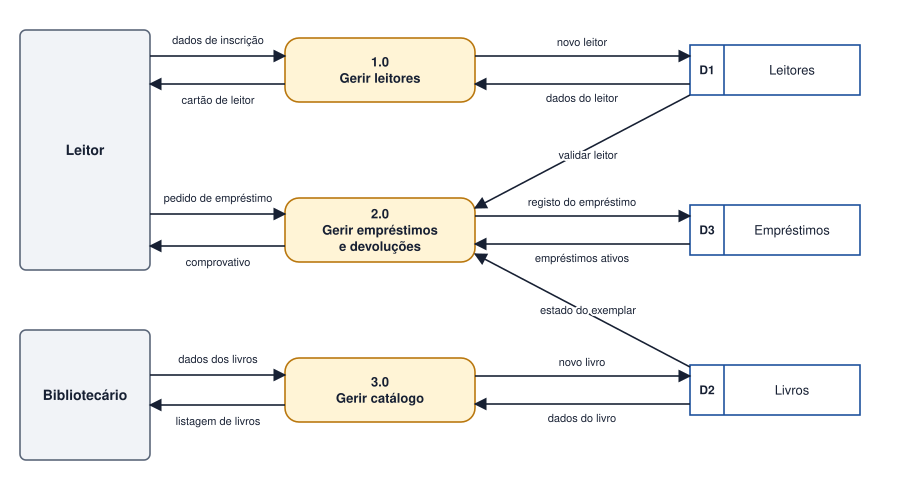

Tema 21 · UML e modelação do comportamento
DFD de nível 1
Decomposição de processos e fluxos de informação
O DFD de contexto mostra o sistema como uma caixa fechada. O DFD de nível 1 abre essa caixa e decompõe o processo único nos seus processos principais, mostrando também os armazéns de dados.
Regras de decomposição
- O processo 0 do contexto é dividido em 3 a 7 processos, numerados 1.0, 2.0, 3.0…
- Balanceamento: os fluxos que entram e saem do sistema no nível 0 devem aparecer, sem alterações, no nível 1. Não se podem inventar nem perder fluxos externos.
- Aparecem os armazéns de dados (D1, D2…) que ligam os processos, cada um com um nome que corresponde a uma entidade ou conjunto de dados.
- Entre processos e armazéns, os fluxos indicam leitura (do armazém para o processo) ou escrita (do processo para o armazém).
- Cada processo deve ter um nome com verbo: Gerir leitores, Registar empréstimo.
Verificações
- Há armazéns que nunca são lidos? (dados que ninguém usa)
- Há armazéns que nunca são escritos? (dados que nunca entram)
- Há processos sem entradas ou sem saídas?
- Cada fluxo tem nome?
Se algum processo continuar demasiado complexo, pode ser decomposto num DFD de nível 2, com numeração 2.1, 2.2…
Atividade
Desenvolver o DFD de nível 1 do sistema de biblioteca
Partindo do DFD de contexto da biblioteca (tema 20), desenvolva o DFD de nível 1. Identifique pelo menos três processos, três armazéns de dados e todos os fluxos entre eles, mantendo os fluxos externos do nível 0 (balanceamento).
Ver proposta de resolução

| Processo | Armazéns que usa |
|---|---|
| 1.0 Gerir leitores | D1 Leitores |
| 2.0 Gerir empréstimos e devoluções | D3 Empréstimos (lê e escreve); lê D1 Leitores e D2 Livros |
| 3.0 Gerir catálogo | D2 Livros |
O DFD de contexto previa outros fluxos (por exemplo, com o fornecedor). Para o equilibrar com o nível 1, poderia acrescentar-se um quarto processo, 4.0 Gerir aquisições, que recebe as faturas e envia as encomendas.
Em resumo
- O nível 1 decompõe o processo do contexto em processos principais e mostra os armazéns.
- Os fluxos externos do nível 0 devem ser mantidos (balanceamento).
- Cada fluxo entre processo e armazém indica leitura ou escrita.